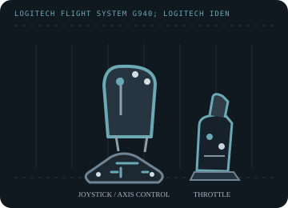

[ JOYSTICK CONTROLLERS // IDENTIFIED COMPONENT ]
Logitech Flight System G940
Force-feedback flight system with a joystick, throttle unit and rudder pedals, all mapped as PC controls.

MODEL IDENTIFICATION: Logitech Flight System G940; Logitech identifies the system as M/N J-U0001. Published family information does not establish the revision or condition of an individual unit; compare its label and included parts with the linked documentation.
Model specifications
| Catalog subcategory | Joystick controllers |
|---|---|
| Exact model / identifier | Logitech Flight System G940; Logitech identifies the system as M/N J-U0001. |
| Axes and buttons | Pitch/roll stick axes, programmable stick buttons and hat, throttle controls, and rudder-pedal plus toe-brake inputs. The pedals provide the rudder axis; force effects are produced at the stick. |
| Physical interface | USB PC flight-controller system with distinct stick, throttle and pedal functions; Windows games may enumerate the controls as multiple controller devices. |
| Sensors and protocol | Analog axes plus DirectInput force-feedback effects. Logitech does not publish the axis sensor element in the legacy support sheet; do not infer Hall sensing from the product's force feedback. |
| Power | USB powers the control electronics; force-feedback hardware may require the original external supply. Verify the rating and polarity on the adapter and unit label rather than substituting a generic supply. |
| Host OS and driver compatibility | Logitech's legacy setup and calibration documentation is Windows XP-era. Basic controller recognition and DirectInput force effects on later Windows versions depend on the OS, game and legacy driver availability. |
Setup and calibration
Connect the supplied units and original power adapter as documented, then calibrate every axis from Windows Game Controllers. Logitech specifically recommends recalibration through the Game Controllers menu; test force effects at low strength first.
Keep the operating-system baseline calibration and in-game sensitivity/dead-zone settings separate. Record the OS, driver, firmware and game used to test each axis and button.
Preservation and service notes
Check all interconnects, pedal springs, throttle friction, stick centering and the force-feedback supply. Keep the original Logitech Gaming Software package/profile with the archived host; do not energize a damaged adapter.
For an archive specimen, photograph the model label, note all included cables/adapters and distinguish directly observed behavior from published specifications.
References and support
- Flight System G940 — Logitech SupportManufacturer system support page; Logitech identifies model J-U0001.
- Recalibrating the G940 flight system — Logitech SupportManufacturer instructions for recalibration in the Windows Game Controllers panel.
Vendor support pages and manual downloads can change. Preserve the applicable manual and installer with a legacy host image, and verify the printed revision before service.